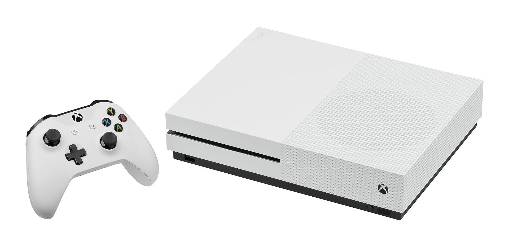

Playstation 4

PlayStation 4 (oficialmente abreviada como PS4) es la cuarta videoconsola del modelo PlayStation.8 Es la segunda consola de Sony en ser diseñada por Mark Cerny y forma parte de las videoconsolas de octava generación. Fue anunciada oficialmente el 20 de febrero de 2013 en el evento PlayStation Meeting 2013,9 aunque el diseño de la consola no fue presentado hasta el 10 de junio en el E3 2013.10 Es la sucesora de la PlayStation 3 y compite con Wii U y Switch de Nintendo y Xbox One de Microsoft. Su lanzamiento fue el 15 de noviembre de 2013 en Estados Unidos y en Europa y Sudamérica fue el 29 de noviembre de 2013,119 mientras que en Japón fue el 22 de febrero de 2014.2
Alejándose de la compleja arquitectura utilizada en el procesador Cell de la videoconsola PlayStation 3, la PlayStation 4 cuenta con un procesador AMD de 8 núcleos bajo la arquitectura x86-64. Estas instrucciones x86-64 están diseñados para hacer más fácil el desarrollo de videojuegos en la consola de nueva generación, que atrae a un mayor número de desarrolladores. Estos cambios ponen de manifiesto el esfuerzo de Sony para mejorar las lecciones aprendidas durante el desarrollo, la producción y el lanzamiento de la PS3. Otras características de hardware notables de la PS4 es que incluyen 8 GB de memoria unificada GDDR5, una unidad de disco Blu-ray más rápido, y los chips personalizados dedicados a tareas de procesamiento de audio, vídeo y de fondo.
Entre las nuevas aplicaciones y servicios, Sony lanzó la aplicación PlayStation App, permitiendo a los que tengan una PS4 convertir los teléfonos inteligentes y las tabletas en una segunda pantalla para mejorar la jugabilidad o en teclados externos para más comodidad en el momento de escribir. La compañía también planeaba debutar con Gaikai, un servicio de juego basado en la nube que aloja contenidos y juegos descargables. Mediante la incorporación del botón "Share" en el nuevo controlador hace que sea posible compartir en cualquier momento capturas de pantalla, trofeos, compras o videos en páginas como Facebook, Twitter y hacer stream de lo que se juegue y ver el de otros amigos en directo desde Ustream o Twitch, Sony planeó colocar más énfasis en el juego social. La consola PS4 el primer día de su lanzamiento vendió más de 1 millón de consolas solo en territorio de los Estados Unidos.12 Al inicio de su conferencia de prensa en la Gamescom 2014, Sony anunció que ya había vendido más de 10 000 000 unidades de la PlayStation 4 en el mundo a usuarios finales. Está diseñada para la amplia integración con PlayStation Vita.13
Xbox One

Xbox One es la tercera videoconsola de sobremesa de la marca Xbox, producida por Microsoft. Forma parte de las videoconsolas de octava generación, fue presentada por Microsoft el 21 de mayo de 2013.6 Es la sucesora de la Xbox 360 y la predecesora de la Xbox Series X|S. Actualmente compite con PlayStation 4 de Sony y Nintendo Switch de Nintendo. Su salida a la venta fue el 22 de noviembre de 20137 a un precio de 499 dólares.8
El Firmware actual de la consola es el 10.0.17133.2020 (rs4_release_xbox_dev_1804.180418-1415), donde hay más opciones de salida de vídeo, hay un nuevo nivel de interactividad de Mixer, se pueden compartir las capturas en Twitter, hay torneos abiertos, se pueden poner los temas en un horario, hay mejoras al Narrador, mejoras en Edge, hay más audio inmersivo y hay un filtrado avanzado para propietarios de clubes.9
El 16 de julio de 2020, Microsoft anuncia oficialmente que se cesa totalmente la producción del Xbox One en todas sus versiones, a excepción el modelo original del Xbox One S. 10 Pero anunciaron que el servicio de Xbox Live aún seguirá presente en el servicio de la consola. así como de las funciones de Xbox Game Pass y Games with Gold, también mencionó que seguirán las unidades y ventas restantes del repertorio de la consola mundialmente hasta que el repertorio este acabado.
Nintendo Switch

Nintendo Switch es la octava consola de videojuegos principal desarrollada por Nintendo. Conocida en el desarrollo por su nombre código «NX», se dio a conocer en octubre de 2016 y fue lanzada mundialmente el 3 de marzo de 2017.
Nintendo considera a Switch una consola híbrida. Se puede utilizar como consola de sobremesa con la unidad principal insertada en una estación de acoplamiento para conectarla con un televisor. Alternativamente, puede ser extraída de la base y utilizada de forma similar a una tableta a través de su pantalla táctil LCD, o colocada sobre una superficie gracias a su soporte plástico integrado siendo así visible por varios jugadores.
La Switch utiliza dos controladores inalámbricos llamados en conjunto Joy-Con, que incluyen cuatro botones de acción estándar y un joystick direccional, así como sensores para la detección de movimiento y retroalimentación táctil de alta definición, aunque se diferencian en algunos botones y características adicionales. Dos Joy-Con pueden conectarse uno a cada lado de la consola para usarse como consola portátil, conectarse al accesorio Grip proporcionado junto a la consola para usarlos como un mando más tradicional, o ser utilizados individualmente en la mano como el mando Wii, y de esta forma usarse con juegos multijugador locales. También puede utilizar ciertos controles inalámbricos y/o alámbricos que no incluye la consola, adoptado como Pro Controller, que incluyen las mismas características que los mandos tradicionales a excepción de que este incluye detección NFC para Amiibo y vibración HD.
Los juegos para esta consola y otras aplicaciones están disponibles como cartuchos físicos ROM de flash y como distribución digital, y no utilizan bloqueo de región. La Switch compite en el mercado de las videoconsolas con sus contemporáneas PlayStation 4 de Sony y Xbox One de Microsoft, y pronto contra la PlayStation 5 y las consolas Xbox Series respectivamente.
El concepto de la Switch surgió como reacción de Nintendo a varios trimestres de pérdidas financieras en 2014, atribuidas a las malas ventas de su consola anterior, la Wii U, así como una mayor competencia en el mercado de los juegos para dispositivos móviles. Posteriormente, el presidente de Nintendo, Satoru Iwata, empujó a la compañía en la dirección de los juegos móviles y la creación de un hardware totalmente nuevo.
El diseño de la Switch está dirigido a una amplia demografía de jugadores de videojuegos a través de sus múltiples modos de uso. Nintendo optó por utilizar componentes electrónicos más estándar, como un procesador basado en la línea Tegra de Nvidia, para hacer el desarrollo de la consola más fácil para los programadores y más compatible con los motores de juego existentes. Como la Wii U había tenido dificultades para obtener el apoyo de estudios externos, dejándolo con una débil biblioteca de juegos, Nintendo buscó el apoyo de muchos desarrolladores y editores para ayudar a construir la biblioteca de juegos de la Switch junto con los títulos propios de Nintendo, incluyendo muchos estudios de videojuegos independientes. Antes del lanzamiento, Nintendo había anunciado que más de 100 títulos estaban en desarrollo por 70 desarrolladores.
Nintendo vendió más de 2.74 millones de unidades de la consola en su primer mes de estar a la venta, superando la proyección inicial de 2 millones de unidades que hizo la compañía, y convirtiéndose en la consola de sobremesa que más rápido se ha vendido de su historia. Las ventas de la Switch estaban muy ligadas a las del videojuego aclamado por la crítica The Legend of Zelda: Breath of the Wild, que se puso a la venta el mismo día que la consola en todo el mundo.
El 20 de septiembre de 2019, se lanzó al mercado una versión revisada5 de Nintendo Switch, manteniendo el tamaño de la versión "antigua" y con una mayor duración de la batería. Esto gracias a una nueva batería recargable de iones de litio de 13,6 Wh (vatios - hora), mientras que la primera versión era de 16 Wh.
Ir arriba